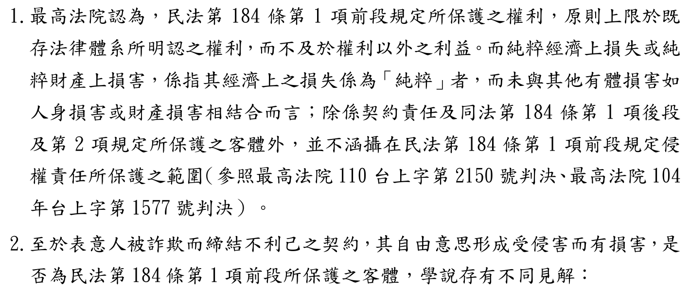
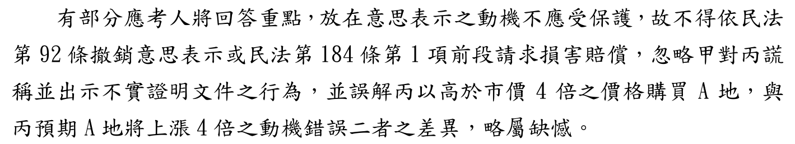

被騙買地，能用民法第184條第1項前段請求賠償嗎？
114年律師第二試｜民法與民事訴訟法（一）｜第一題第（一）小題（25分）
題目
這一題有三段故事、三個小題。第（二）小題表見代理、第（三）小題第三取得人清償代位，另有示範頁（見文末相關連結）。本頁只做第（一）小題，用得到的事實畫黃色底線。
- （一）丙以被詐欺為由，依民法第184條第1項前段規定，請求甲賠償其所受之3,000萬元損害，有無理由？（25分）本頁只做這一題
- （二）乙請求丁塗銷B地之抵押權設定登記，丁則抗辯甲已出示乙之身分證、印章、B地所有權狀、印鑑證明等文件，乙應負授權人責任。丁之抗辯，有無理由？（25分）
- （三）乙屆期未清償其對戊之1,000萬元借款債務，庚恐C地遭拍賣，遂向戊清償該借款，經戊塗銷C地之抵押權登記後，庚請求乙給付1,000萬元，有無理由？（25分）
影片說明
影片依序示範：讀題、算字數上限、看考選部評分要點、第184條的三道門、110台上2150判決、學弟學姊對話說明兩說、本文見解與結論、閱卷委員提醒的易錯點，最後比對兩個AI的版本，把擬答從頭看一遍。
甲騙丙買地
丙的身體、所有權都沒有受損，損失的是「多付的錢」。這是本題的關鍵。
先懂兩個詞
第184條有三道門，丙走哪一道，結果不一樣：
| 門 | 條文要件 | 保護什麼 | 丙能不能過 |
|---|---|---|---|
| 第1項前段 | 因故意或過失，不法侵害他人之權利 | 權利，例如生命、身體、所有權 | 本文：不能 價差是純粹經濟上損失；表意自由不算前段的權利（否定說） |
| 第1項後段 | 故意以背於善良風俗之方法，加損害於他人 | 不限於權利 | 能 甲故意騙人（112台上1719） |
| 第2項 | 違反保護他人之法律，致生損害於他人 | 保護他人之法律所要保護的利益 | 看刑法 甲如構成刑法第339條詐欺罪 |
答題地圖
標號層次：一、→（一）→1.。第二層不要直接寫「1.」。第一行直接寫結論，不再加題號「（一）」，以免和第二層的（一）混淆。
考選部評分要點與閱卷委員的話
考選部公布了這一題的評分要點，先肯定甲構成詐欺，再分兩步：
| 評分要點 | 內容 |
|---|---|
| 1. 前段保護客體 | 第184條第1項前段保護的權利，原則上限於既存法律體系所明認之權利；純粹經濟上損失，除契約責任及同條第1項後段、第2項外，不在前段保護範圍（引110台上2150、104台上1577）。 |
| 2. 表意自由是否為前段客體 | 學說有不同見解，兩說都要寫。 甲說（否定）：前段之自由限於身體行動自由；但得依第1項後段請求（引111台上176、112台上1719），甲如構成刑法第339條詐欺罪，另得依第2項請求。 乙說（肯定）：表意自由屬人格法益核心，且得具體特定，應屬前段之權利。 |

閱卷委員的話：
- 多數考生能指出表意自由受民法制度保護、得依第92條撤銷；採肯定說、否定說的都有。
- 有考生把重點放在「意思表示之動機不受保護」，忽略甲謊稱並出示不實證明文件的行為，也把「丙以高於市價4倍的價格購買」和「丙預期A地將上漲4倍的動機錯誤」混在一起，略屬缺憾。

來源：考選部〈114年司法官、律師考試第二試法律專業科目評分要點及各科目成績統計〉附件第1、2、5頁，已轉成圖片逐頁核對。104台上1577未開全文核對，本頁擬答未引用。
擬答
丙依§184Ⅰ前段請求無理由，但得依同項後段請求：
一、甲構成詐欺
甲明知A地未劃入重劃範圍，仍謊稱已劃入並出示不實證明，就交易重要事實積極欺罔，使丙陷於錯誤，以市價4倍購地，受有3000萬元價差損害。此非丙單純預期漲價之動機錯誤。
二、表意自由是否為§184Ⅰ前段之「權利」
（一）前段保護客體原則限於既存法律體系明認之權利；純粹經濟上損失，除契約責任及§184Ⅰ後段、Ⅱ外，不在前段保護範圍（110台上2150）。
（二）否定說：前段之自由限於身體行動自由，不及於意思決定自由，否則保護範圍難以確定，侵權責任將成概括條款。
（三）肯定說：表意自由與人格自主、人性尊嚴不可分，屬人格法益核心，且得具體特定，應屬前段之權利。
（四）本文採否定說：丙所失者為高價購地之價差，屬純粹經濟上損失；法律另有§92撤銷及§184Ⅰ後段、Ⅱ之保護，無須擴張前段。
三、結論
丙依§184Ⅰ前段請求無理由。惟甲故意以背於善良風俗之方法加損害於丙，丙得依§184Ⅰ後段請求3000萬元（112台上1719）；甲如構成刑法§339詐欺罪，丙亦得依§184Ⅱ請求。
擬答463字（含標題、標點與數字，不含空白，以程式計算）。
字數上限：為什麼是561字
| 項目 | 數字 |
|---|---|
| 本小題可用時間 | 120分鐘 × 25/150 ＝ 20分鐘 |
| 讀題 | 約3分鐘，實際作答約17分鐘 |
| 打字速度 | 一般人中文打字約每分鐘33字（粗估） |
| 上限 | 17分鐘 × 每分鐘約33字 ＝ 561字 |
二是本題重心：兩說並陳，再表明本文見解與理由。
互動：丙走哪一道門？
同樣是被騙，丙主張的依據不同，結果就不同。先自己想想，再點。
為什麼這樣寫
| 寫法 | 理由 |
|---|---|
| 總標題先寫結論 | 閱卷者第一眼就知道答案：前段不行，後段可以。 |
| 一、先寫甲構成詐欺 | 評分要點的起點。最後一句「非動機錯誤」回應閱卷委員的提醒。 |
| 二（一）先講前段只保護權利 | 評分要點第1點；用110台上2150，事實和本題幾乎相同。 |
| 兩說並陳 | 評分要點把甲說、乙說並列，兩說都要寫，再表明本文見解。 |
| 本文採否定說 | 貼近最高法院110台上2150、112台上1719的路線；丙另有第92條撤銷、後段、第2項可用，不必把前段撐大。採肯定說也可以，理由寫清楚即可。本頁取捨 |
| 結論改走後段＋第2項 | 評分要點甲說的後半段：否定說下，仍可依後段、第2項請求。 |
實務見解
| 字號 | 重點 | 怎麼用 |
|---|---|---|
| 最高法院110年度台上字第2150號民事判決（110年12月2日，廢棄發回） | 第184條保護之法益，除同條第1項後段、第2項外，原則上限於既存法律體系所明認之權利；純粹經濟上損失不在前段保護範圍。該案出賣人隱瞞土地未納入重劃範圍，買受人受有價差損失，原審未說明究為何種權利受侵害，廢棄發回。 | 事實和本題幾乎相同。發回後，臺灣高等法院花蓮分院111年度上更一字第1號認詐欺事實不足採，買受人敗訴；本頁只援用最高法院的法律見解。 |
| 最高法院112年度台上字第1719號民事判決（113年6月12日，廢棄發回） | 詐欺符合故意以背於善良風俗之方法加損害於他人者，受害人得依第184條第1項後段請求；所保護者為表意人意思表示形成過程之自由。 | 否定說下，結論改走後段。 |
兩件都在司法院系統開全文核對（2026-11-12）。
預想易錯點
以下是批改前預想的錯誤（第一列取自閱卷委員的話），還不是學生實際作答的統計。集體批改後，會改成「常見錯誤」並註明人數。
| 可能的錯誤 | 應該怎麼寫 |
|---|---|
| 只寫「丙以為會漲價，是動機錯誤，不受保護」 | 丙會這樣想，是甲拿假文件騙出來的。重點是甲就重要事實積極欺罔，構成詐欺（閱卷委員：略屬缺憾）。 |
| 直接說「自由被侵害」，前段當然成立 | 先說前段只保護權利、價差是純粹經濟上損失，再討論表意自由算不算前段的權利，兩說並陳。 |
| 只寫第92條撤銷 | 題目問的是第184條第1項前段，撤銷只能當本文見解的理由之一。 |
| 採否定說後直接寫「無理由」結束 | 補上後段（112台上1719）與第2項，丙仍可請求3,000萬元。 |
| 第一行寫題號「（一）」，第二層又寫（一） | 第一行直接寫結論；層次是一、→（一）→1.。 |
延伸思考
參考資料
歡迎指正
相關連結
民法講義總覽 同一題第（二）小題：同居人拿印章去設定抵押，要負表見代理責任嗎？ 同一題第（三）小題：買了有抵押的地，替賣方還錢後能要回來嗎？ 意思表示不自由（詐欺、脅迫之撤銷） GitHub 原始檔